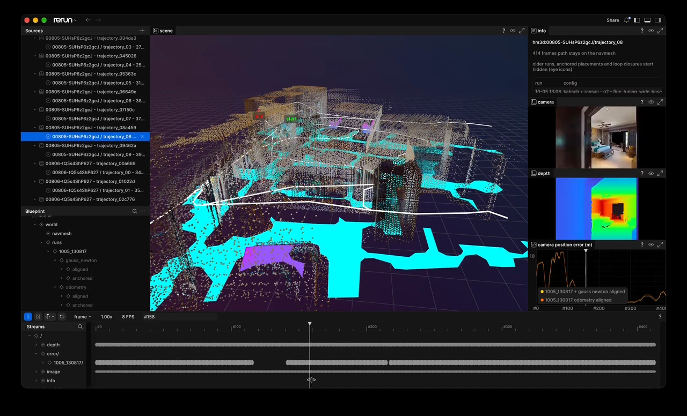
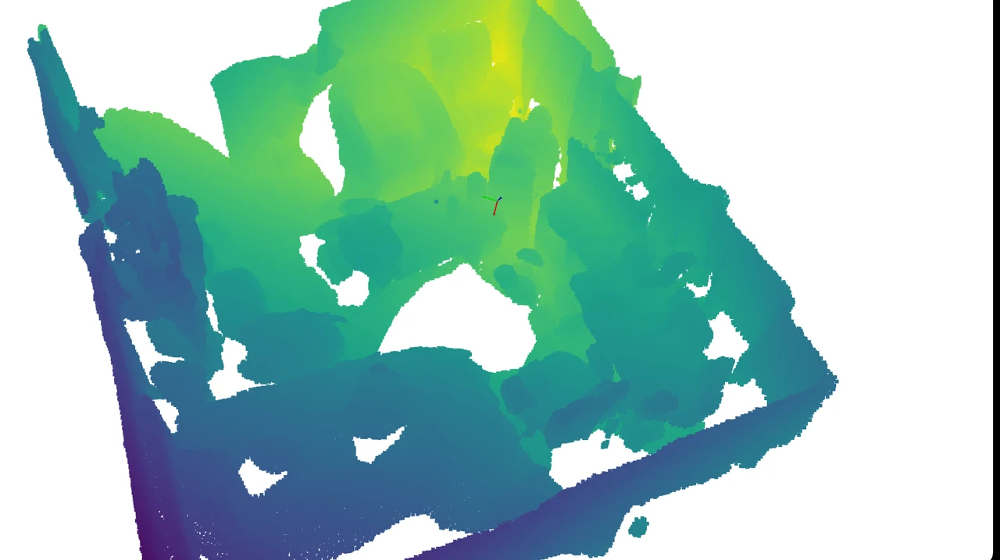
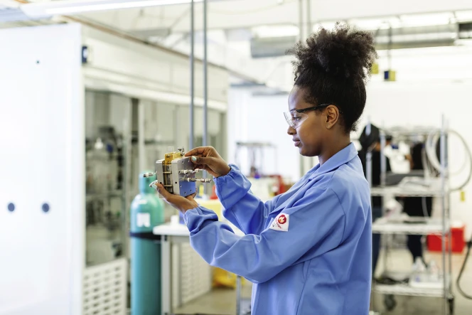

Robotics & perception
Mapping a room
with an iPhone.
My iPhone LiDAR project builds a 3D map as the camera moves. Watch a simulated camera turn around the room, or map with your own camera.
Explore the SLAM projectProjects
Computer vision · Machine learning
Learned Visual Pose
I derived and implemented pose estimation in C++/Eigen, rendered RGB-D training data, and trained image descriptors. I’m now developing Transformers for pose graphs.
Explore the project

iPhone LiDAR SLAM
A Swift scanner and a ROS 2 pipeline that register measured LiDAR scans into a 3D map.

ROS 2 Sensor Fusion
Fused gyroscope and magnetometer signals for heading and checked inertial velocity against GPS.

Self-Balancing Robot
Modeled a two-wheel robot in CAD and trained a PPO controller to balance it in simulation.

Wireless Fencing Scoring
Prototyped wearable épée touch detectors and a Swift scorekeeping app.
Experience

Robotics Test Engineer
Locus Robotics
Built motion-capture ground truth and simulation tooling to measure localization and positioning accuracy.

Hardware Automation Co-op
Twelve
Built hardware-in-the-loop tests, instrument software, and recovery tools for CO₂ electrolysis test stands.

Software Engineering Co-op
Kythera Space Solutions
Developed REST APIs, C++ libraries, and integration tooling for satellite communications optimization.